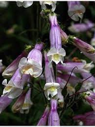
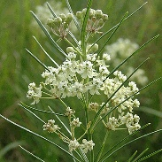
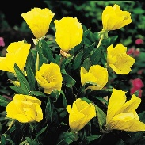

Thank you so much to NightCrawler Gardens LLC for generously donating the
following native plants for our full-sun pollinator garden!
Submit pictures of native plants, puddlers, and pollinators in your own garden
to: mambourgsungarden@gmail.com. Pictures are greatly appreciated and
have the chance to be featured on Fairfield County Parks Website.
|
Plant Name
|
Description
|
Height/Spacing
|
Bloom Time
|
Pollinators
|
|
Hairy Beardtongue

|
A perennial species with wooly stems.
In the summertime, delicate flowers
appear on the plant
in various shades of lavender.
|
1-2 feet tall
8-20 inches wide
Low growing
|
Beginning around May or June.
|
It attracts bees, including large and small
carpenter bees
and bumblebees, as well as hummingbirds.
|
|
Spotted Joe-Pye Weed

|
Branches with purple-speckled flowers that are
lance-shaped and medium green leaves.
|
4-6 feet tall 2-4 feet wide
|
Occurs around middle to late summer.
|
Popular with monarchs,
hummingbirds,
tiger swallowtails, and bumblebees.
|
|
Common Milkweed

|
A perennial plant with several
solitary stalks and
milky sap contained in its leaves.
|
5 feet tall
24-30 inches wide
|
Bloom time usually June through August.
|
Common milkweed is most famed for attracting monarch butterfly
caterpillars.
|
|
Whorled Milkweed

|
A perennial with clusters of
greenish white
flowers near the upper leaves.
|
12-30 inches tall
12-24 inches wide
|
Flowers will bloom June through September.
|
Provides nectar for a wide
variety of
butterflies and bees.
|
|
Plant Name
|
Description
|
Height/Spacing
|
Bloom Time
|
Pollinators
|
|
Orange Coneflower

|
Bold yellow-orange flowers that cover nearly the entire
plant. Flowers have a spiny central cone.
|
2-4 feet tall
1-2 feet wide
|
Blooms from midsummer to
fall.
|
Most commonly attracts large
swarms of
butterflies. Birds
like cardinals and
goldfinches like the seeds
|
|
Eastern Beebalm

|
A member of the mint family with
bold pink and white flowers that often have purple flecks.
|
1-2 feet tall
3 inches by 2 inches wide
|
The plant blooms from April to May.
|
It attracts
hummingbirds,
bumble bees, and hawk moths.
|
|
Missouri Evening Primrose

|
A sprawling perennial plant with 4-petaled, bright lemon-yellow
flowers.
|
2-6 feet tall 2-3 feet wide
|
Usually, early summer to early
fall.
|
The flowers are largely pollinated by hawkmoths and bees.
|
|
Showy Goldenrod

|
Clusters of bright yellow flowers on stiff stems with narrow leaves.
|
3-5 feet tall 3-4 feet wide
|
Starting at the end of summer and lasting into
fall.
|
Various species of bees, including bumble bees.
|
|
Eastern Red Columbine

|
Flowers have red and yellow
colored petals on extended stems.
|
6 inches - 4 feet
tall
18 inches wide
|
Blooms between April and June.
|
It is pollinated by hummingbirds and hawkmoths.
|
Why Native Plants?
Invasive species are plants and animals that are transported to a new
environment from a different region, over-running and destroying the growth of
plants in their natural home. This changes habitats for the worse and often
causes the extinction of our own native plants. Native plants are what keep
our environment thriving, unaffected, and ideal. These plants collect the
water run-off from their area, preventing floods, and improving the air
quality. With them, a happy, safe ecosystem is guaranteed not only for the
animals that live within it, but also you.
A few benefits include:
Healthier and Stronger Plants - Native plants are meant to grow where they
are. They are much better suited to the soil and climate and will thrive.
Water Waste Decrease - This is their home, meaning extra water and fertilizer
are not necessary.
Preserves Biodiversity - Biodiversity is the connection between everything in
its natural environment. Our native plants play an important role in providing
shelter and food for native insects and wildlife.
Why Help Pollinators?
Pollination is a vital part of plant reproduction for 75 % of the world’s
flowering plants and 35% of food crops. Pollinator plants attract various
animal species, providing them with necessary nectar and pollen used as food.
In turn, the animals spread pollen grains from plant to plant which produces
the seeds needed for new plant growth. Those new plants support other animals
including humans, both directly and indirectly. Pollinators include bats,
butterflies, some birds, moths, beetles, and most importantly bees. Without
them, about half of the fruits and vegetables we eat would not be able to
grow. However, pollinators are under a serious threat. Many bee species are on
a decline, and bats appear to be disappearing. Simply, there aren’t enough
pollinator plants to support their populations. You can help by planting
native pollinator plants in your own garden.
What is a puddler and why is it important?
If you are facing the sign, the puddler is located in the top left corner of
the garden. A butterfly puddler is a beneficial addition to a pollinator
garden. In a dish filled with wet sand, small pebbles, and larger rocks,
butterflies can congregate and extract much-needed nutrients, including water,
dissolved salts and minerals. A puddler is relatively DIY with accessible
resources you can find around the house. To make one, you need a planter drip
tray., sand, small pebbles, and rocks. The rocks for our puddler were
excavated during sod removal for the garden. It is vital to keep it damp for
the butterflies but avoid standing water. You can sprinkle salt on the sand
occasionally. Adding cut-up pieces of over-ripe fruit like bananas and oranges
will help attract even more butterflies.

Also, be certain to look at the projects of my fellow Girl Scouts. We all
contributed to ensuring our pollinators have the resources they need. One
garden, the shade garden, can be viewed from the nature center windows
overlooking the pond. Near the nature center, look for posts with bat houses
on them.
Girl Scout Troop 420 would like to thank the staff at Mambourg Park and
Fairfield County Parks for their invaluable assistance in completing our
pollinator project.